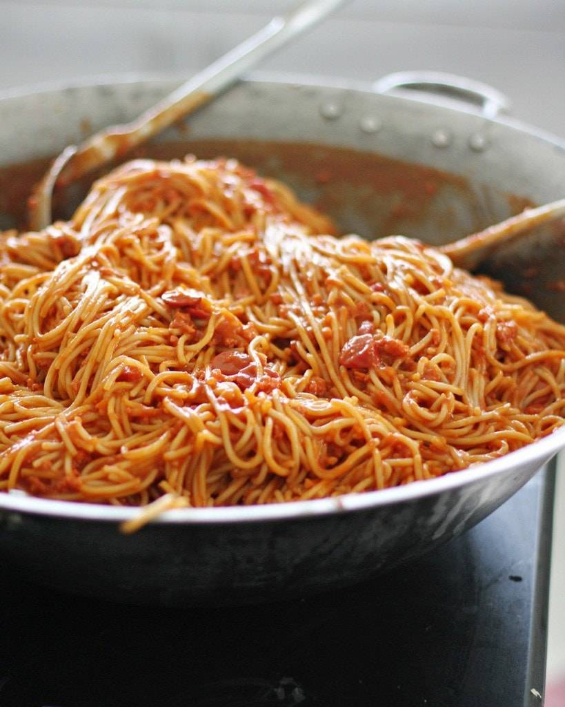

Spaghetti recipe

Description
Here is my own recipe for Spaghetti, it can be done with beef or ground turkey (if you're looking to be more healthy. Only thing about this recipe
is that there is no exact measurements it is quite a bit of guesstimating and if you are using ground turkey you would need to add more while seasoning
the meat. Other than that here are the ingredients and steps to making my own spaghetti recipe.
Ingredients
- Ground turkey or Ground beef
- crushed tomatoes (28oz)
- minced garlic
- garlic powder
- onion powder
- italian seasoning
- parsley
- tomato paste
- salt and pepper
Step by step
- First you get your pan and pour a bit of olive oil
,as soon as it heats up a bit you can now throw in the
mined garlic and finally when that heats up you throw in
the meat. You should also start putting your noodles to boil
-
When the meat looks almost done that is when you put on the
seasonings, (note: if you are using the ground turkey
you are going to want to season it a bit more) once
the meat is done you put in the tomato paste and crushed tomatoes
and throw in a little extra italian seasoning if you'd like
- After about 10 minutes, everything should be nice and ready
and now you can just strain the noodles and put everything in the same pot,
let it sit for a bit and your meal is ready.